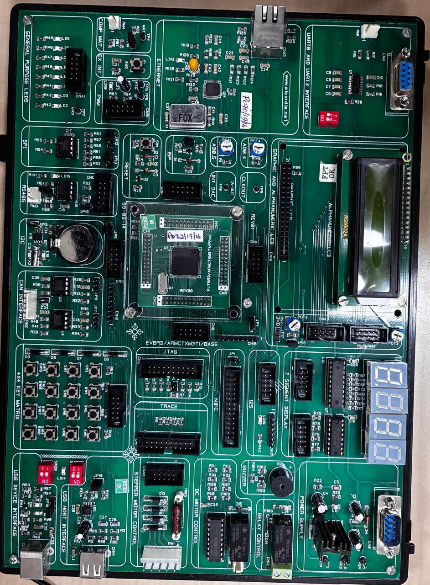
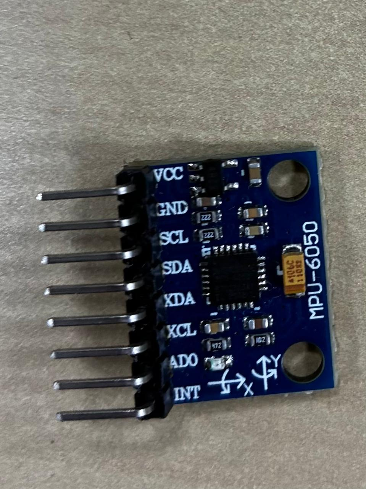
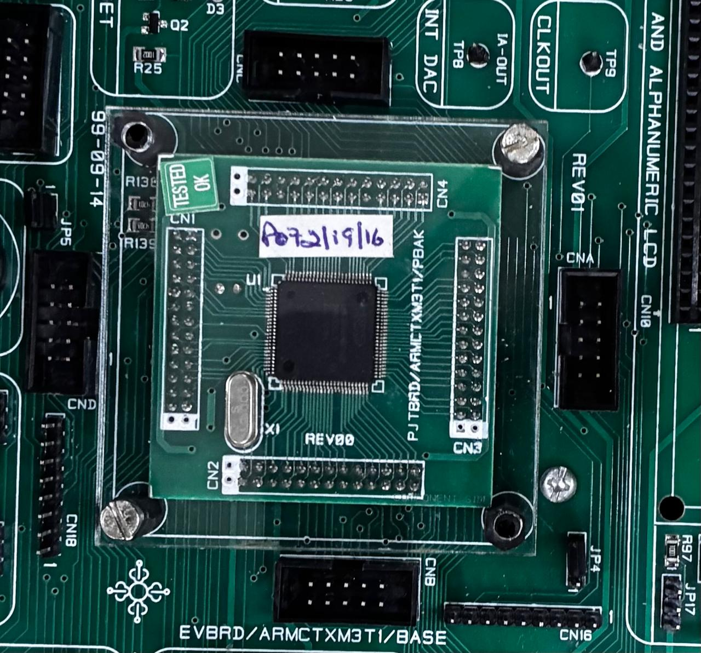
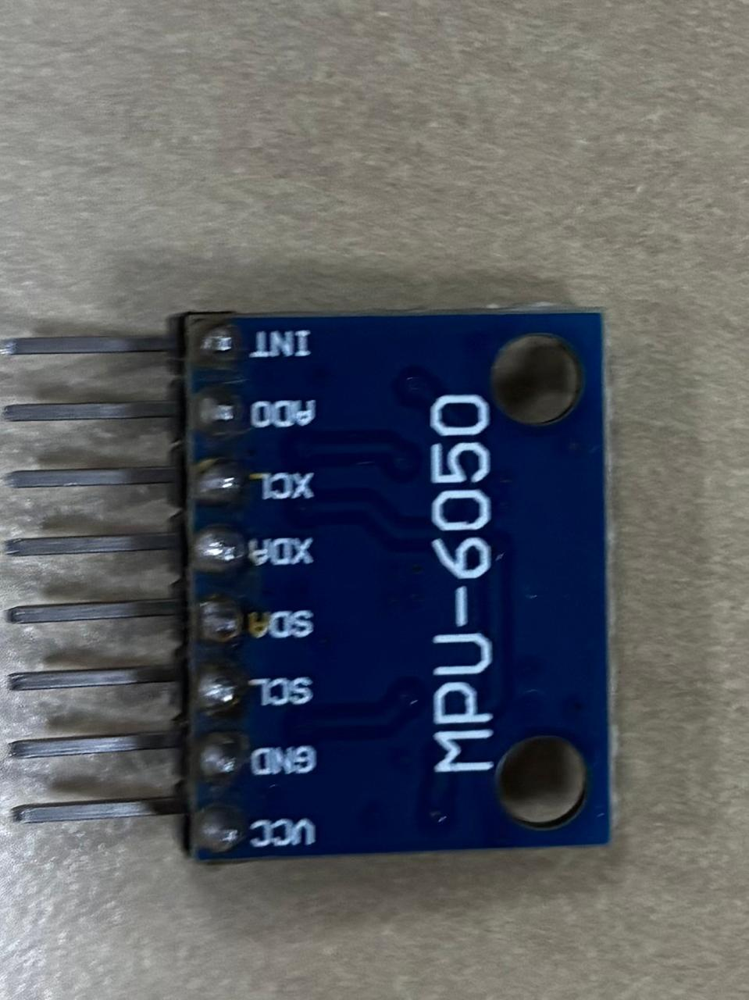
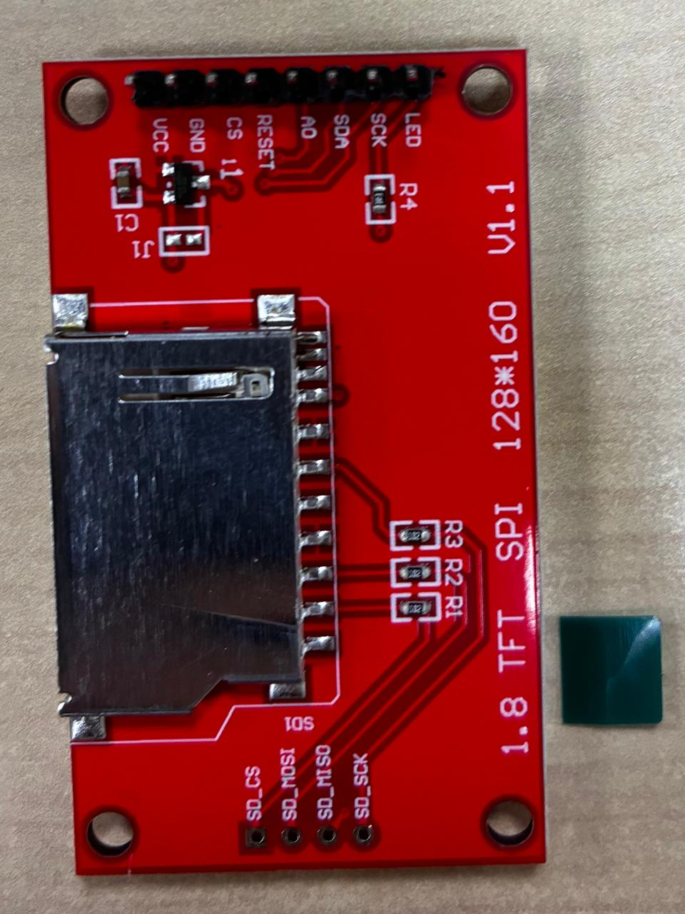
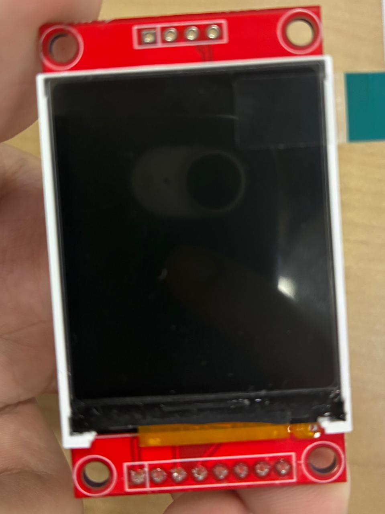

REAL TRAINER PHOTO
Board overview
Tap a region. Markers locate connector areas, not individual contacts.

ESDL / INTERACTIVE INTEGRATION LAB
Flick & Fly EngineeringINTERACTIVE LPC1768 WIRING WORKBENCH
Explore the real trainer photograph, logical connector contacts and module labels. Coloured lines are planning previews, not physical wires or electrical approvals.
REAL TRAINER PHOTO
Tap a region. Markers locate connector areas, not individual contacts.

REAL MODULE PHOTOGRAPHS

MPU SCL/SDA are primary I²C; XCL/XDA are auxiliary. TFT SDA means SPI data, not I²C.
SOURCE-BACKED CONTACT VIEW
DOCUMENTED ROUTE PLANNER
Select a module pin, then a numbered trainer contact. A dashed line previews a documented signal match; a solid line records a local plan choice. Neither means physical installation.
GUIDED LESSONS
CONNECTION REFERENCE
| Module | Module pin | Trainer connector | Contact | LPC1768 signal | Connection method | Evidence source | Electrical review status | Physical test status |
|---|
| Contact | Signal | Alternate functions | LPC1768 package pin | Source | Routing warning |
|---|
Absent or blocked mappings are not instructions to improvise a connection.
SIMULATED · NOT A PHYSICAL HARDWARE TEST
Synthetic arbitrary-unit input; no LPC1768, MPU registers, wiring or TFT controller is emulated.
PHYSICAL CONNECTION METHOD
Follow the route from a boxed trainer connector to a verified adapter and then to a labelled module header. These diagrams are conceptual until the electrical and orientation review is complete.
CNA–CND are 10-pin male box-type FRC connectors (manual PDF pp24–26). A compatible keyed 10-pin IDC ribbon can mate with the box. An ordinary individual jumper is not known to fit a shrouded connector safely.
Identify actual pin 1 and keying on the cable and board. The placement drawing (PDF p39) locates the area, but the supplied photograph does not prove the numbered end. Check a connector drawing or continuity before using adapter labels. Never force a cable.
A verified adapter contact can connect through an individual jumper or breadboard row to the module header. Read the labels in the actual MPU and TFT photographs. Each breadboard row group is typically connected internally; power rails run lengthwise and may be split. Check the actual board with power off.
Never assume two leads fit one IDC contact or that an unlabeled adapter maps contacts in a particular order.
Positive supply and ground are different nodes. Both modules must share a ground reference with the trainer in a completed design. This is an illustrative arrangement only: a reviewed trainer ground contact reaches a verified ground bus that branches to both GND pins.
Before power, review breakout supply and logic limits, I²C pull-up rail, TFT backlight current, onboard SPI/I²C sharing and jumper settings. Check continuity and shorts while unpowered; record the reviewer and evidence.
PDF p20 describes a +5 V trainer input and onboard +3.3 V regulator, not approved VCC destinations for these breakouts. VCC, TFT RESET/A0/LED and MPU AD0/INT need component evidence and an allocation. Do not assume other unlabeled or unused module pins can float safely.
01 / START HERE
This manual preserves the early hardware-identification and integration plan. Its step cards are planning guidance, not a live record of later milestone passes.
The repository now contains M5 gameplay firmware, the M6 generated-data ML pipeline and an isolated M7 firmware image. The owner reports flashing M7 and seeing gameplay appear the same as M5. That board report is qualitative; the exact wiring and electrical details remain unverified. Read the current evidence index and connection record before interpreting the historical steps below.
PROPOSED SYSTEM FLOW
UART logging supports bring-up and measurements. The PC trains a tree offline; gameplay inference is intended to run on the board.
THE REAL PARTS
These are supplied photographs. Labels are visible; electrical behaviour is not yet proven.
Base marking reported by the team: EVBRD/ARMCTXM3TI/BASE. The visible I²C, SPI, UART, ISP and JTAG sections are starting points for tracing; they do not identify usable header pins.

Base: EVBRD/ARMCTXM3TI/BASE, REV01, and 99-05-14. Piggyback: PJTBRD/ARMCTXM3TI/PBAK, REV00. The processor's printed part number is not readable; reconcile these markings with the manual's piggyback description before relying on revision-specific routing.
PCB text reads MPU-6050; the IC top marking is not legible. Header labels, in order: VCC GND SCL SDA XDA XCL AD0 INT. SCL/SDA are the proposed host I²C connection; XCL/XDA are auxiliary sensor-bus labels.

The reverse confirms the printed header positions. It does not establish the regulator, pull-up rail, AD0 level, or safe breakout supply.
Open reverse ↗
Display headerSeparate SD padsDisplay header: VCC GND CS RESET A0 SDA SCK LED. The separately marked SD-card pads are outside the minimum display test. SDA/SCK here must not be read as an I²C pair.

The module is marked 1.8 TFT SPI 128*160 V1.1 on its reverse. The photograph does not identify the controller IC or show a successful display test.
A directly readable photo marking or inspected project-file fact; not a hardware pass.
ProposedA procedure or expected result to test later.
Verification requiredDo not use as a wiring or configuration instruction yet.
02 / IDENTIFY & SAFETY
A label such as “SPI” names an interface area. It does not identify the two physical contacts to join. Record both endpoints and their electrical evidence before any module is connected or powered.
Verification required The photographed base layout is consistent with ALS-SDA-ARMCTXM3-01-UM1 (PDF p39), and its CNC/CND tables document candidate board signals (pp25–26). Exact assembly revision and piggyback routing still need confirmation against the fitted hardware. The module VCC and I/O limits, I²C pull-up rail, TFT backlight circuit, physical CNC contact-1 orientation, and any onboard RTC/SPI sharing still need review. A separate ALS-PJTBRD-ARMCTXM3-01 manual names a different base and has conflicting clock notes; do not transfer its settings.
Photograph the base underside, piggyback underside, processor marking and readable revision codes. Obtain the lab's manual and schematic; check that their board drawings and names match both physical boards. Record discrepancies instead of choosing the closest-looking table.
For each candidate I²C, SPI/SSP, UART, GPIO, power and ground line, locate the exact connector name and contact number in the matching schematic. Check keying, orientation and numbered end. Confirm routing and any selectable jumpers or onboard conflicts.
Identify board supply input and ground, the module VCC pins, rail and I/O voltage limits, available current, I²C pull-ups and their supply, and TFT backlight circuit. Compare board and module specifications. A component's VCC label or an Arduino wiring example is insufficient.
Identify the actual PC cable/adapter, serial ISP or debugger connection, reset/ISP controls, documented software path and one observable board-only test. Keep RS-232 connector signals distinct from microcontroller-level UART signals.
The embedded and hardware/data owners jointly review every row below. Only rows with a matched source, both endpoints, compatible levels and reviewer can graduate to a connection map. Leave all other rows open.
| Source document / revision | Trainer connector + contact | MCU signal / function | Module + labelled contact | Voltage / pull-up evidence | Reviewer + status |
|---|---|---|---|---|---|
03 / BUILD, FLASH & DEBUG
Proposed procedure No local MCU project or successful flash was found. The following workflow begins after board and power review; it supplies no guessed oscillator, serial or jumper setting.
Record the installed Keil µVision and compiler versions, device support, Flash Magic version, PC interface, adapter/cable and available lab sample project. Check that the selected device matches the chip marking.
Use startup code, memory layout and oscillator/clock values from the matched processor and board documents. Compare settings with the fitted crystal. Preserve the build settings in the test record.
Compile a board-only observable test; distinguish “translation succeeded,” “link succeeded,” and “HEX generated.” If headers, startup symbols, target choice or memory ranges fail, resolve the exact diagnostic before flashing.
Use only the procedure and ISP/debug connector established for this revision. Record port, settings, firmware identifier and program/verify response. Do not import the candidate manual's switch positions until matched.
Look for the planned board-only change after reset. Then establish UART or another suitable output path and record actual terminal settings and output. A successful build alone is not a physical pass.
Purpose: Prove that a known binary executes on this board. Prerequisites: reviewed board supply, processor identity, matching startup/clock settings and programming route. Connection reference: completed identification worksheet; board only.
Expected, not observed: tool reports successful build and programming; the selected board-only indicator changes in a repeatable way after reset. Pass: both the recorded build/verify result and physical observation are present. Fail: a diagnostic, program/verify failure, or absent observation. Stop: uncertain supply, overheating, wrong device or unexplained reset behaviour.
Preserve the first compiler/linker diagnostic; check device/startup selection and memory layout. For programming, compare the actual cable and port with the matched board procedure, then check documented ISP/reset jumper states. For missing UART output, distinguish RS-232 from TTL-level interfaces and confirm the recorded serial format.
Save: project/build settings, tool output, firmware identifier, programming log and an observation photo/video or serial log. Genuine Keil and Flash Magic screenshots have not yet been captured.
04 / STANDALONE MPU6050
Connection pending review The kit manual documents CNC contact 5 as P0.19/SDA1 and contact 6 as P0.20/SCL1; contact 10 is ground. These are board-side routes for the breakout's primary SDA/SCL, not completed wire approvals. XDA/XCL are auxiliary; module VCC, pull-up rail, AD0 and shared RTC use remain unresolved.
Use the reviewed worksheet for supply, common ground, primary I²C lines and address-selection state. Keep the TFT detached for this test.
Configure only verified board pins and a documented clock/pin-function setup. Log transaction success, NACK and timeout separately; do not interpret a failed transaction as all-zero sensor data.
Use the identity register and expected value from the applicable MPU documentation, recording the observed value and AD0 condition. Do not assume the address merely from a common breakout example.
Record acceleration and angular velocity together with timestamp, sequence or error marker, and configuration. Hold the module stationary, then make one controlled tilt at a time while keeping the intended mounting direction recorded.
Capture a stationary interval and document how offsets/neutral are estimated. Review noise, missing samples and direction changes before defining gesture thresholds.
Purpose: Prove sensor communication and plausible six-axis variation. Prerequisites: P1 pass, reviewed I²C/power table and applicable register documentation. Connection reference: signed worksheet row IDs.
Expected, not observed: documented identity response; repeatable stationary samples; a controlled tilt changes relevant acceleration values, and motion changes angular-rate values. Pass: identity agrees with the documented device and timestamped six-axis samples change consistently without unexplained read errors. Fail: NACK, wrong identity, frozen/missing channels or implausible behaviour. Stop: rail mismatch, heating, persistent bus lock or uncertain wiring.
Revisit reviewed endpoints, common ground, pull-up rail, AD0 condition and I²C pin function; inspect error codes and timestamps. For swapped motion axes, check physical orientation before changing software labels.
Save: connection record, identity transaction, timestamped raw log, orientation photo, firmware identifier and reviewer.
05 / STANDALONE TFT
Controller and electrical details unknown The kit manual documents CNC 1 as P0.15/SCK0, CNC 2 as P0.16/SSEL0, CNC 4 as P0.18/MOSI0 and CNC 10 as ground. These are board-side possibilities for TFT SCK, CS, SDA and ground; RESET, A0, VCC and LED still need allocation and electrical review. A lit backlight would not prove SPI functionality.
Match seller/module documentation and board components; record display supply, input levels, SPI mode and initialization variant. Treat the SD-card pads as a separate interface that is not needed for this test.
Trace trainer SPI/SSP data/clock and separate control GPIOs to exact contacts, including common ground and compatible power. Keep the MPU detached.
Use a driver/configuration appropriate to the verified controller. Record reset behaviour and the chosen rotation/offset settings, rather than trying anonymous initialization sequences until something lights up.
Request distinct full-screen colors, a short text label, edge/corner shapes and each intended orientation. Photograph the observed screen and note clipping or color inversion.
Purpose: Prove initialization and basic rendering. Prerequisites: P1 pass, module/controller evidence and reviewed TFT connection rows. Connection reference: signed worksheet row IDs.
Expected, not observed: commanded color fills, legible text and visible corner markers in the intended orientation. Pass: each diagnostic pattern appears reproducibly with no unexplained clipping. Fail: blank panel, wrong colors, missing region or intermittent reset. Stop: uncertain backlight supply/current, rail mismatch, heating or unexplained electrical behaviour.
Check documented power/backlight, reset, CS and A0 roles, verified SPI clock/data routing, controller variant, rotation and offsets. A lit backlight alone does not prove that SPI or rendering works.
Save: module identification, connection record, firmware identifier, configuration and actual screen photographs.
06 / INTEGRATE THE SYSTEM
Architecture proposed No local embedded game or peripheral driver is presently identified. The existing browser player guide is illustrative, not firmware.
Compare the already tested I²C and SPI choices, UART and control GPIOs, plus onboard jumper conflicts. Record the final simultaneous configuration before combining modules.
Acquire timestamped readings with error handling and stationary neutral calibration while the display test pattern runs. Confirm neither peripheral loses its standalone pass.
Render a ship, target/enemy, score and start/restart state. Use an explicit control-event interface so simulated input or a known button can test game logic before gesture mapping. Record which elements genuinely run on the MCU.
Map left/right to held steering, fire to a single shot event subject to cooldown, and no-command to no new action. Give the threshold and tree the same calibrated features and downstream event handling for comparison.
Demonstrate start, neutral, left, right, deliberate fire, incidental movement and restart without losing UART/error visibility. Preserve failure traces.
Prerequisites: P1, S1 and D1 physical passes plus a reviewed combined pin table. Expected, not observed: stable samples, visible game state and matching deliberate control events. Pass: the recorded sequence works on the board across repeat trials, with errors and false activations counted. Fail: any standalone function regresses or controls do not match the documented event contract. Stop: electrical symptoms or recurring unexplained bus faults.
Return to the last standalone pass; compare pin multiplexing, jumper routing, scheduling, bus errors and renderer update load. Change one cause at a time and rerun both isolated checks.
Save: combined connection review, build/firmware ID, UART trace, repeat-trial sheet and demonstration video.
07 / DATA, BASELINE & ML
Planned study Compare a conventional threshold detector with a shallow decision tree exported to C on the LPC1768. There are no measured classifier results or labelled recordings in the inspected repository.
Define left, right, fire and no-command/background motion before trials. Keep sensor orientation and neutral procedure consistent. Log six axes, timestamps, label intervals, session ID, anonymous participant code if used, mounting context, firmware ID and errors. Include idle, transitions and incidental movement, not just clean gestures.
Keep entire recordings or sessions in one train, validation or test partition. Overlapping windows from a recording must never cross partitions. Prefer held-out participants if enough are recruited. Choose window length and features using verified sampling and training data; estimate preprocessing parameters on training data only.
First tune a documented threshold/dead-zone/cooldown baseline using training data. Train a shallow decision tree offline, export its decisions to C, and compare C predictions with Python on the same held-out feature vectors. Integrate only if logs, parity and build time allow.
| Measure | How to record it | Current value |
|---|---|---|
| Macro-F1; per-class precision and recall | Confusion matrix on a fixed held-out split; report support for each class | Unmeasured |
| False activations / minute | Count command events during timed no-command and incidental-motion trials | Unmeasured |
| Missed gestures | Count labelled deliberate events with no matching command inside a predefined response window | Unmeasured |
| Response and inference latency | Define input-event and display/log endpoints; separately time classifier execution on the board | Unmeasured |
| Flash and SRAM | Archive build map and toolchain configuration; distinguish static use from peak runtime memory | Unmeasured |
Academic journal articles form the related-work core. Synopsis references [2] (IEEE ICMLA 2022) and [4] (IEEE CCSSTA 2026) are conference proceedings, not journal publications. NXP, TDK/InvenSense and Sitronix documents are hardware sources, not academic substitutes. A small pilot does not establish improvement, novelty or generalization.
Prerequisites: stable timestamped S1/I1 logging, written labels and a fixed session split. Steps: freeze test sessions; fit preprocessing and tune both methods without test data; check Python/C parity; run the same held-out recordings and physical no-command trials; archive predictions and counts. Pass: scripts or calculations can regenerate reported metrics from preserved labelled data and both methods use the same feature/event contract. Fail: missing labels, leaked overlapping windows, mismatched C outputs or unverifiable counts. Stop: do not claim a comparative result when a defensible held-out set is unavailable.
Keep the working threshold demonstration. Report offline tree work as exploratory if completed; state clearly whether C parity and MCU inference were or were not reached. Never convert a simulated or laptop-only result into an on-device claim.
Save: data dictionary, split manifest, participant/session counts, feature definition, baseline settings, tree configuration, C parity output, confusion matrix and build/resource records.
08 / TROUBLESHOOT & RECORD
Use this blank record for each test. It is a working form in your browser: entries are not automatically saved. Print or save the completed page and keep the cited logs/photos with the team’s evidence. A source file, a build, and a browser illustration prove different things.
These are prompts, not automatic pass indicators.
The page cannot inspect the board. A checked box records only a human action. The pass/fail field must be supported by a separate physical observation, firmware identifier and saved evidence. Simulated screens or offline classifier runs belong in separate records.
09 / FOUR-DAY EXECUTION
Owners: A embedded/toolchain, B hardware/data, C manual/research/evidence. A and B jointly review every supply and wiring decision.
| Day | Critical path | Parallel ownership | Objective exit and fallback |
|---|---|---|---|
| 1 · Access | Match hardware and electrical plan → board-only build/flash → debug path → MPU and TFT independently. | A: build/flash/UART. B with A: safety and isolated tests. C: manual shell, evidence forms, journal list. | Recorded board-only output and separate S1/D1 pass or explicit failure. If flash fails, pause dependent integration and resolve access. |
| 2 · Control | Stabilize six-axis acquisition, calibration and minimum player/target/score path; collect labelled sessions. | A: acquisition/game. B: orientation, protocol and recordings. C: verified manual pages. | Repeatable logging and observable minimum game/control path. If TFT fails, preserve a UART sensing demo and disclose the missing display objective. |
| 3 · Detectors | Threshold baseline first; session-safe split, shallow tree, C export/parity and MCU integration only when ready. | A: baseline/C integration. B: held-out/no-command trials. C: training/evaluation record and methods. | Hardware baseline observed. Tree status explicitly recorded. If data or parity fail, report ML as incomplete or exploratory. |
| 4 · Evidence | Repeat integrated tests, measure feasible metrics/resources, fix defects, rehearse, complete manual and paper draft. | A: firmware/timing/map. B: repeat trials and video/logs. C: offline manual QA, journal literature and limitations. | A teammate reproduces the observed demo; each result has method, count and evidence. Mark unmeasured values honestly. |
3D or browser simulation, decorative animation, complex waves, sound and advanced graphics.
Electrical review, isolated tests, timestamped logging, minimal game, threshold baseline and no-command trials.
Power/setup record, firmware ID, start, neutral, left, right, one fire, no-command, restart, failure recovery and evidence retrieval.
Using the supplied trainer manual, photograph CNC and the actual cable/adapter to establish contact 1; inspect whether a ribbon joins CNC to CNC1 and record JP12/JP13 and other relevant jumper positions before allocating the shared SPI/I²C lines. Obtain MPU6050 and TFT breakout circuit/voltage evidence, including I²C pull-ups and TFT backlight drive. Then complete and review each module-pin → trainer-contact row before wiring.